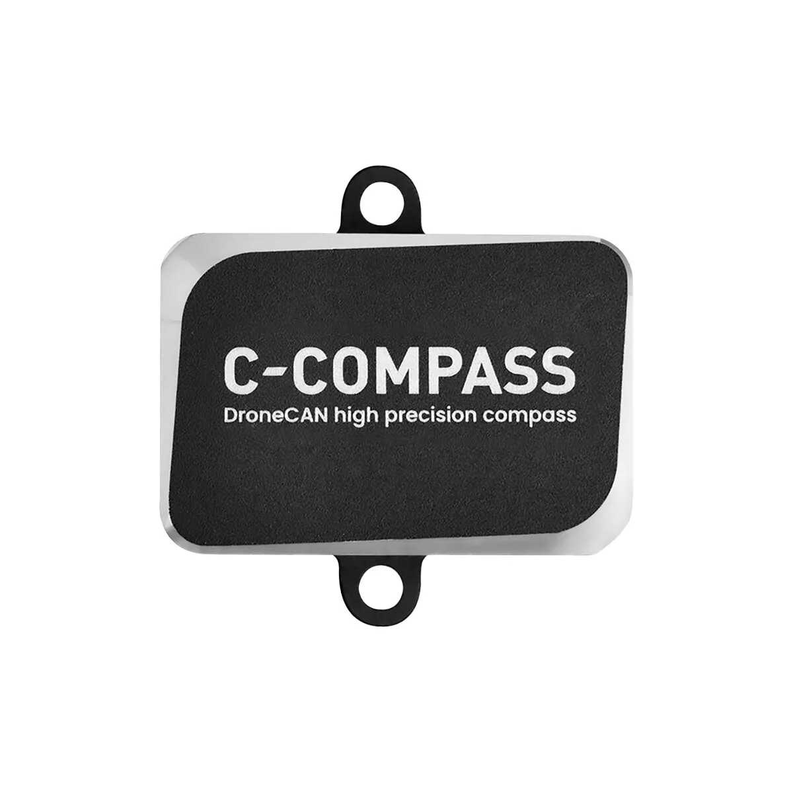

What is a Compass?
A compass, also called a magnetometer, measures the drone’s heading
relative to the Earth’s magnetic field. It tells the flight controller
which direction the drone is facing.
How the Compass Works
The compass detects the Earth’s magnetic field and calculates the
direction of magnetic north. The flight controller combines compass
data with GPS and IMU data to determine the drone’s orientation and
heading during flight.
Key Parameters
- Magnetic sensitivity: Ability to detect small field changes
- Noise resistance: Ability to reject electrical interference
- Calibration: Required before flight for accurate heading
Typical Use Cases
- GPS-based navigation
- Waypoint missions
- Return-to-home function
- Heading stabilization
Selection Tips
- Use an external compass for larger drones
- Mount the compass away from power wires and ESCs
- Use GPS modules with built-in compass for easier setup
Common Mistakes
- Mounting the compass near high-current wires
- Skipping compass calibration
- Flying with magnetic interference